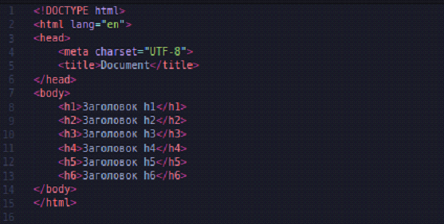
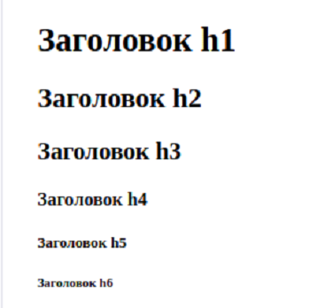
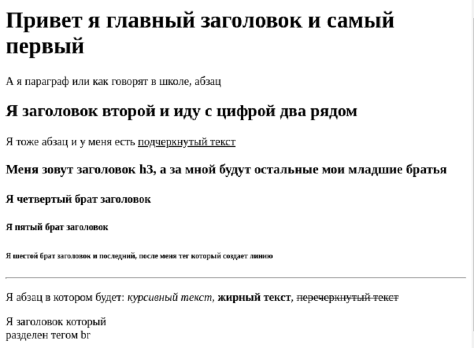
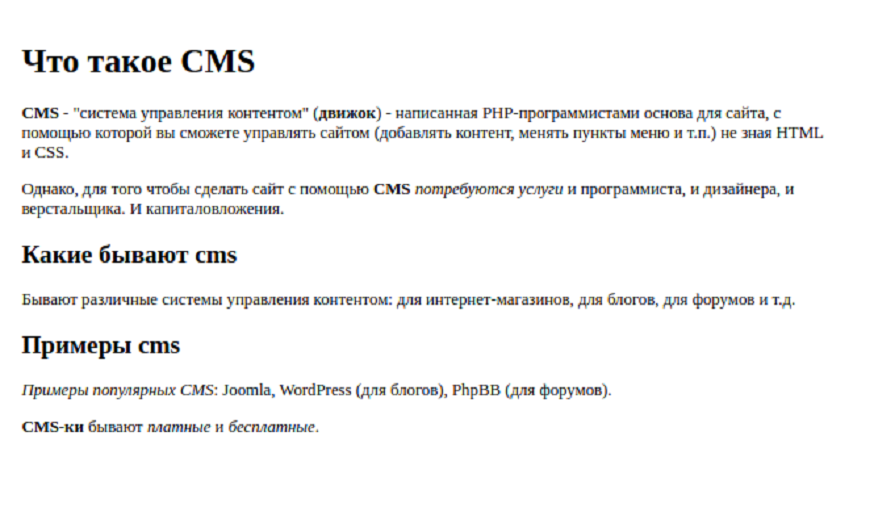

<link rel="stylesheet" href="projectStyle.css">

<section class="project-container">
	<div class="project-container__logo">
		
	</div>
	
	<p class="project-name">
		Работа с базовыми HTML тегами
	</p>
	<div class="description-block">
		<article class="description-block__text">
			<div class="logos">
				<!-- 
		&lt;<span class='tag'>ol</span>&gt;-->
			</div>
			

			<p>HTML теги - это специальные команды для браузера. Они говорят ему, что, к примеру, следует считать
				заголовком страницы, а что абзацем. HTML теги являются основной составляющей WEB-страницы</p>
			<p>Теги строятся по такому принципу: уголок &lt;, потом имя тега, а потом уголок &gt;, вот так: 
				<span class="code_line">
					&lt;<span class="tag">имя тега</span>&gt;
				</span>
			. Имя тега может состоять из английских букв и цифр. Примеры тегов: &lt;h1&gt;, &lt;p&gt;,
				&lt;b&gt;.</p>
			<p>Теги обычно пишутся парами - открывающий тег и соответствующий ему закрывающий. Разница между открывающим
				и закрывающим тегами в том, что в закрывающем теге после уголк &lt; стоит слеш /.</p>
			<p>К примеру, &lt;p&gt; - так я открыл тег p, а так - &lt;/p&gt; - я его закрыл. Все, что попадает между
				открывающим и закрывающим тегами, подпадает под воздействие нашего тега.</p>
			<p>Бывают теги, которые не нужно закрывать, например, &lt;br&gt; или &lt;img&gt;.</p>

			<p>Абзацы</p>
			<p>Одним из основных элементов страницы являются абзацы. Их можно сравнить с абзацами в книге - каждый абзац
				начинается с новой строки</p>
			<p>Абзац создается с помощью тега &lt;p&gt;...&lt;/p&gt;</p>
			
			<p>Так код будет выглядеть в браузере</p>
			
			<p>Заголовки h1, h2, h3, h4, h5, h6</p>
			<p>Заголовки создаются с помощью тегов </p>
			<ol>
				<li>&lt;h1&gt;...&lt;/h1&gt; - главный заголовок все страницы</li>
				<li>&lt;h2&gt;...&lt;/h2&gt;</li>
				<li>&lt;h3&gt;...&lt;/h3&gt;</li>
				<li>&lt;h4&gt;...&lt;/h4&gt;</li>
				<li>&lt;h5&gt;...&lt;/h5&gt;</li>
				<li>&lt;h6&gt;...&lt;/h6&gt;</li>
			</ol>
			<p>Они имеют разную степень важности. В заголовке h1 следует располагать название всей HTML страницы, в h2 -
				название блоков страницы, в h3 - название подблоков и так далее.</p>
			<p>Так код будет выглядеть бразуере: </p>
			
			<p>Теги для стилизации текста </p>
			<p>Теги данной группы можно вставлять в теги &lt;p&gt;, &lt;h1&gt;</p>

			&lt;i&gt;...&lt;/i&gt; - тег который делает текст курсивным
			&lt;u&gt;...&lt;/u&gt; - тег который подчеркивает текст
			&lt;s&gt;...&lt;/s&gt; - тег который перечеркивает текст
			&lt;b&gt;...&lt;/b&gt; - тег который делает тест жирным

			<p>Одиночные теги </p>
			<p>До этого нам встречались парные теги, у котрых есть закрывающая пара. Сейчас мы с вам пройдем пару тегов
				которые не имеют этой пары, они называются одиночные.</p>

			<p>&lt;br&gt; - тег br переносит текст который стоит после него на новую строку, дело в том что как бы вы не
				ставили enter в вашем текстовом редакторе, браузер все равно отобразить текст в одну строку и тег br как
				раз таки нужен для того чтобы в нужном месте мы могли перенести тест на новую строку.</p>

			<p>&lt;hr&gt; - тег который создает горизонтальную линию на своем месте </p>
			<p>Задание 1 </p>
			<p>Повторить страницу по данному образцу</p>
			
			<p>Задание 2</p>
			<p>Повторить страницу по данному образцу</p>
			
			<div class="description-block__image">
			</div>
		</article>
	</div>
</section>